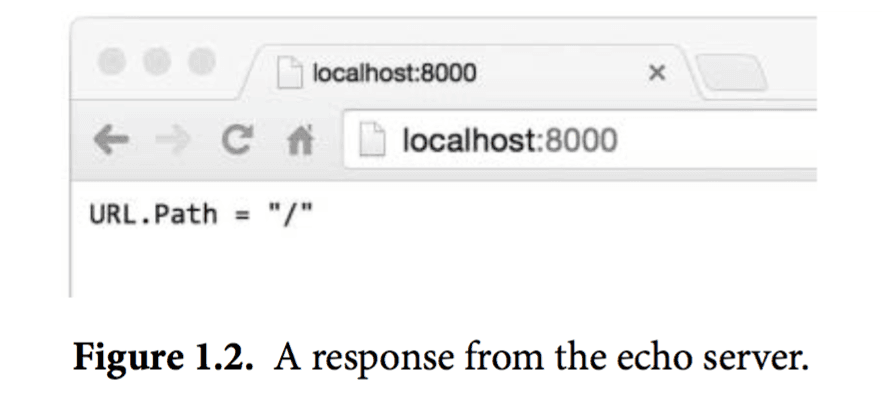
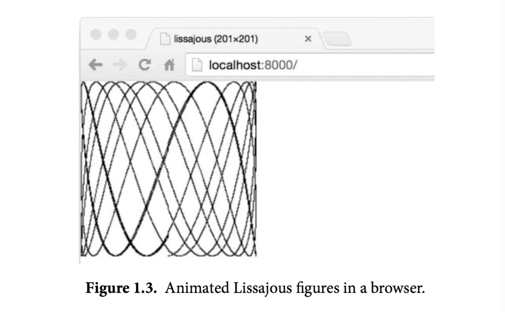

1.7. Web服務
Go語言的內置庫使得寫一個類似fetch的web服務器變得異常地簡單。在本節中，我們會展示一個微型服務器，這個服務器的功能是返回當前用戶正在訪問的URL。比如用戶訪問的是 http://localhost:8000/hello ，那麼響應是URL.Path = "hello"。
gopl.io/ch1/server1
// Server1 is a minimal "echo" server.
package main
import (
"fmt"
"log"
"net/http"
)
func main() {
http.HandleFunc("/", handler) // each request calls handler
log.Fatal(http.ListenAndServe("localhost:8000", nil))
}
// handler echoes the Path component of the request URL r.
func handler(w http.ResponseWriter, r *http.Request) {
fmt.Fprintf(w, "URL.Path = %q\n", r.URL.Path)
}
我們只用了八九行代碼就實現了一個Web服務程序，這都是多虧了標準庫裡的方法已經幫我們完成了大量工作。main函數將所有發送到/路徑下的請求和handler函數關聯起來，/開頭的請求其實就是所有發送到當前站點上的請求，服務監聽8000端口。發送到這個服務的“請求”是一個http.Request類型的對象，這個對象中包含了請求中的一系列相關字段，其中就包括我們需要的URL。當請求到達服務器時，這個請求會被傳給handler函數來處理，這個函數會將/hello這個路徑從請求的URL中解析出來，然後把其發送到響應中，這裡我們用的是標準輸出流的fmt.Fprintf。Web服務會在第7.7節中做更詳細的闡述。
讓我們在後臺運行這個服務程序。如果你的操作系統是Mac OS X或者Linux，那麼在運行命令的末尾加上一個&符號，即可讓程序簡單地跑在後臺，windows下可以在另外一個命令行窗口去運行這個程序。
$ go run src/gopl.io/ch1/server1/main.go &
現在可以通過命令行來發送客戶端請求了：
$ go build gopl.io/ch1/fetch
$ ./fetch http://localhost:8000
URL.Path = "/"
$ ./fetch http://localhost:8000/help
URL.Path = "/help"
還可以直接在瀏覽器裡訪問這個URL，然後得到返回結果，如圖1.2：

在這個服務的基礎上疊加特性是很容易的。一種比較實用的修改是為訪問的url添加某種狀態。比如，下面這個版本輸出了同樣的內容，但是會對請求的次數進行計算；對URL的請求結果會包含各種URL被訪問的總次數，直接對/count這個URL的訪問要除外。
gopl.io/ch1/server2
// Server2 is a minimal "echo" and counter server.
package main
import (
"fmt"
"log"
"net/http"
"sync"
)
var mu sync.Mutex
var count int
func main() {
http.HandleFunc("/", handler)
http.HandleFunc("/count", counter)
log.Fatal(http.ListenAndServe("localhost:8000", nil))
}
// handler echoes the Path component of the requested URL.
func handler(w http.ResponseWriter, r *http.Request) {
mu.Lock()
count++
mu.Unlock()
fmt.Fprintf(w, "URL.Path = %q\n", r.URL.Path)
}
// counter echoes the number of calls so far.
func counter(w http.ResponseWriter, r *http.Request) {
mu.Lock()
fmt.Fprintf(w, "Count %d\n", count)
mu.Unlock()
}
這個服務器有兩個請求處理函數，根據請求的url不同會調用不同的函數：對/count這個url的請求會調用到counter這個函數，其它的url都會調用默認的處理函數。如果你的請求pattern是以/結尾，那麼所有以該url為前綴的url都會被這條規則匹配。在這些代碼的背後，服務器每一次接收請求處理時都會另起一個goroutine，這樣服務器就可以同一時間處理多個請求。然而在併發情況下，假如真的有兩個請求同一時刻去更新count，那麼這個值可能並不會被正確地增加；這個程序可能會引發一個嚴重的bug：競態條件（參見9.1）。為了避免這個問題，我們必須保證每次修改變量的最多隻能有一個goroutine，這也就是代碼裡的mu.Lock()和mu.Unlock()調用將修改count的所有行為包在中間的目的。第九章中我們會進一步講解共享變量。
下面是一個更為豐富的例子，handler函數會把請求的http頭和請求的form數據都打印出來，這樣可以使檢查和調試這個服務更為方便：
gopl.io/ch1/server3
// handler echoes the HTTP request.
func handler(w http.ResponseWriter, r *http.Request) {
fmt.Fprintf(w, "%s %s %s\n", r.Method, r.URL, r.Proto)
for k, v := range r.Header {
fmt.Fprintf(w, "Header[%q] = %q\n", k, v)
}
fmt.Fprintf(w, "Host = %q\n", r.Host)
fmt.Fprintf(w, "RemoteAddr = %q\n", r.RemoteAddr)
if err := r.ParseForm(); err != nil {
log.Print(err)
}
for k, v := range r.Form {
fmt.Fprintf(w, "Form[%q] = %q\n", k, v)
}
}
我們用http.Request這個struct裡的字段來輸出下面這樣的內容：
GET /?q=query HTTP/1.1
Header["Accept-Encoding"] = ["gzip, deflate, sdch"]
Header["Accept-Language"] = ["en-US,en;q=0.8"]
Header["Connection"] = ["keep-alive"]
Header["Accept"] = ["text/html,application/xhtml+xml,application/xml;..."]
Header["User-Agent"] = ["Mozilla/5.0 (Macintosh; Intel Mac OS X 10_7_5)..."]
Host = "localhost:8000"
RemoteAddr = "127.0.0.1:59911"
Form["q"] = ["query"]
可以看到這裡的ParseForm被嵌套在了if語句中。Go語言允許這樣的一個簡單的語句結果作為局部的變量聲明出現在if語句的最前面，這一點對錯誤處理很有用處。我們還可以像下面這樣寫（當然看起來就長了一些）：
err := r.ParseForm()
if err != nil {
log.Print(err)
}
用if和ParseForm結合可以讓代碼更加簡單，並且可以限制err這個變量的作用域，這麼做是很不錯的。我們會在2.7節中講解作用域。
在這些程序中，我們看到了很多不同的類型被輸出到標準輸出流中。比如前面的fetch程序，把HTTP的響應數據拷貝到了os.Stdout，lissajous程序裡我們輸出的是一個文件。fetchall程序則完全忽略到了HTTP的響應Body，只是計算了一下響應Body的大小，這個程序中把響應Body拷貝到了ioutil.Discard。在本節的web服務器程序中則是用fmt.Fprintf直接寫到了http.ResponseWriter中。
儘管三種具體的實現流程並不太一樣，他們都實現一個共同的接口，即當它們被調用需要一個標準流輸出時都可以滿足。這個接口叫作io.Writer，在7.1節中會詳細討論。
Go語言的接口機制會在第7章中講解，為了在這裡簡單說明接口能做什麼，讓我們簡單地將這裡的web服務器和之前寫的lissajous函數結合起來，這樣GIF動畫可以被寫到HTTP的客戶端，而不是之前的標準輸出流。只要在web服務器的代碼里加入下面這幾行。
handler := func(w http.ResponseWriter, r *http.Request) {
lissajous(w)
}
http.HandleFunc("/", handler)
或者另一種等價形式：
http.HandleFunc("/", func(w http.ResponseWriter, r *http.Request) {
lissajous(w)
})
HandleFunc函數的第二個參數是一個函數的字面值，也就是一個在使用時定義的匿名函數。這些內容我們會在5.6節中講解。
做完這些修改之後，在瀏覽器裡訪問 http://localhost:8000 。每次你載入這個頁面都可以看到一個像圖1.3那樣的動畫。

練習 1.12： 修改Lissajour服務，從URL讀取變量，比如你可以訪問 http://localhost:8000/?cycles=20 這個URL，這樣訪問可以將程序裡的cycles默認的5修改為20。字符串轉換為數字可以調用strconv.Atoi函數。你可以在godoc裡查看strconv.Atoi的詳細說明。